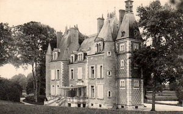
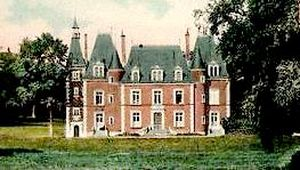
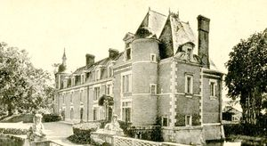
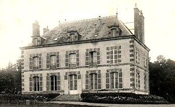

Recensement Jean-Claude Truffet
| Département | 45 — Loiret |
| Canton | La Ferté-Saint-Aubin |
| Commune | Marcilly-en-Villette |
| Type d'édifice | Château |
| Période d'origine | XIV-XVII-XIX |




Deux châteaux dans cet article celui d'Alosse et de Bruel. ALLOSSE, le premier seigneur d'Alosse fut un certain Guillaume Cramoy. A partir du XIVe siècle on sait qu'Alosse appartenait à la famille de la Ferté qui le posséda plus de trois siècles, en 1427 on trouve Jehan de la Ferté, seigneur d'Alosse, qui participa semble-t il, à l'expédition envoyée pour secourir Montargis assiégée par les Anglais. Après la guerre de Cent Ans, Jean de la Ferté le succède à Alosse. L'un d'eux est désigné sous le nom de Jean de Meung ou de la Ferté-Avrain (la Ferté-Beauharnais) du fait de son adoption par Jean de Meung et de Jacquette Garreau, son épouse. A partir de 1640, on trouve à Alosse Nicolas de Fortbois, chevalier. En 1698, la terre d'Alosse est achetée par François Rousseau de la Motte. Son fils, capitaine de carabiniers mourut à Alosse âgé de 88 ans. Ses héritiers vendirent le domaine à Louis Bénigne Dehais-Gendron. En 1831, il fut acheté par Étienne de Mainville qui en modifia l'aspect et qui combla les douves, mais, complètement ruiné, il ne put terminer son uvre et fut obligé de vendre la propriété dont il ne garda que la partie qui forme aujourd'hui le Cerf Bois. Le baron d'Ailly s'en rendit acquéreur en 1852 et y mena grand train. En 1907 le domaine passa à son petit-fils, le comte Joseph de Brosse, qui loua le château pour la chasse. En 1934, le château fut mis en vente et à partir de ce moment commença un morcellement qui n'a fait que se poursuivre, grâce à M. de Mainville qui s'y ruina, une symétrie qu'il n'avait jamais eue.
ALLOSSE, construit en briques losangées, coiffé de hautes toitures, hérissé de tourelles et de poivrières, la demeure est le type même du château de Sologne. Si les restaurations du XIXe siècle lui ont ajouté quelques fâcheux appendices, tels les escaliers, les balustres ou l'épis de faîtage, il faut convenir que les transformations de cette époque redoutable ont conservé la plus grande partie de l'ancien manoir tel que l'avait représenté Ch. Pensee. Les douves ont été supprimées, les baies sont modernes, mais les lucarnes de la façade nord ont été conservées et le château, enfin terminé. BRUEL, est une maison d'antique fondation. Son nom, dérivé du vieux mot français breuil, désigne un clos, un bois entouré de haies. La famille qui portait ce nom y demeura jusqu'à la fin du XIIIe siècle. Son propriétaire, Louis Michel de Chemillard émigra pendant la Révolution, et la demeure fut vendue comme bien national. La terre fut morcelée et le château en grande partie détruit. Il fut cependant racheté et restauré vers 1824 par M. Hippolyte Cournol, écrivain, aujourd'hui oublié, qui le vendit en 1833 au comte de Murat d'Estang, originaire du Dauphiné. En 1917, ses descendants vendirent la demeure à M. Henri Brinon, industriel, qui s'attacha à remettre la propriété en état. Les terres furent reboisées, les étangs remis en eau et le château consolidé. Son uvre fut continuée et parachevée par son gendre, M. Henri Deschamps, agent de change à Orléans qui l'a transmis à son fils Patrice Deschamps.
Alosse; famille de la Ferté Bruel; Louis Michel de Chemillard
"
Deux châteaux à Marcilly-en-Villette celui d'Alosse grav-1-2 et de Bruel grav-3 . Allosse 47° 45' 58" nord, 2° 03' 59" est Bruel 47° 48' 27" nord, 2° 03' 04" est